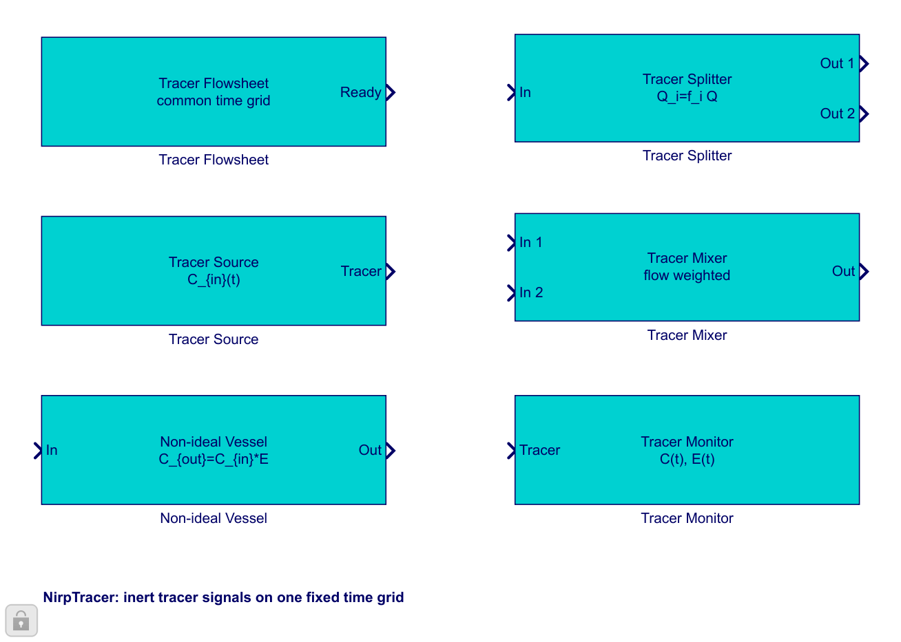

A tracer flowsheet follows an inert concentration signal through a linear network at constant volumetric flow. Vessels may be placed in series, or Splitter and Mixer blocks may create parallel paths.
Decide the physical duration that must be visible and the fastest feature that the time step must resolve. A short final time truncates vessel tails; a large time step can hide narrow peaks.

A complete single-path network needs Tracer Flowsheet, Tracer Source, at least one Non-ideal Vessel, and Tracer Monitor. Add Splitter and Mixer together when the signal follows parallel paths.
Each vessel convolves the incoming concentration with its RTD. The accumulated RTD travels beside the concentration, so the monitor can report the network distribution independently of the source signal. There is no reaction and no recycle calculation.
| Symptom | What to do |
|---|---|
| A tracer block is connected to an ideal block | Replace it with the matching cyan tracer block; the two signal types cannot be mixed. |
| The outlet tail ends abruptly | Increase tfinal in Tracer Flowsheet and run again. |
| A recycle loop is required | Redesign this tracer study as a linear series/parallel network; recirculation is outside its scope. |